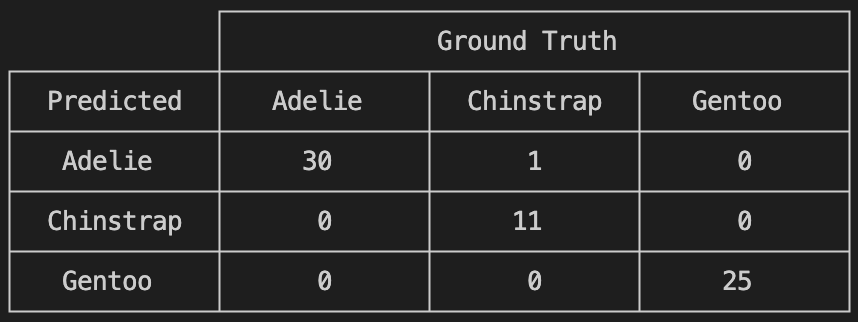

Data science and machine learning¶
Questions
Can I use Julia for machine learning?
What are the key steps in data preprocessing in Julia?
How can you handle missing data in Julia?
How can you save your current environment in Julia?
What are some popular machine learning algorithms available in Julia?
How does Julia handle large datasets in machine learning?
How can you implement clustering in Julia?
What are some classification techniques available in Julia?
Instructor note
100 min teaching
50 min exercises
Working with data¶
In the Data Formats and Dataframes lesson, we explored a Julian approach to manipulation and visualisation of data.
Here we will learn and clustering, classification, machine learning and deep learning with some toy examples.
Download a dataset¶
We start by downloading a dataset containing measurements of characteristic features of different penguin species.

Artwork by @allison_horst¶
Exercise
To obtain the data we simply add the PalmerPenguins package.
using Pkg
Pkg.add("PalmerPenguins")
using PalmerPenguins
As it was done in the Data Formats and Dataframes lesson, we can
dropmissing!(df)
The main features we are interested in for each penguin observation are bill_length_mm, bill_depth_mm, flipper_length_mm and body_mass_g. What the first three features mean is illustrated in the picture below.

Artwork by @allison_horst¶
Saving the Current Setup¶
There are several ways to save the current setup in Julia.
This section will cover three parts: saving the environment to
have reproducible code and saving data using CSV files or JLD.
1. Saving the Environment¶
To check the current status of your Julia environment, you can use the status command in the package manager.
using Pkg
Pkg.status()
Status `~/.julia/environments/v1.9/Project.toml`
[336ed68f] CSV v0.10.11
[aaaa29a8] Clustering v0.15.4
[a93c6f00] DataFrames v1.6.1
[682c06a0] JSON v0.21.4
[8b842266] PalmerPenguins v0.1.4
This will display the list of packages in the current environment along with their versions.
To save the state of your environment, Julia uses two files: Project.toml and Manifest.toml.
The Project.toml file specifies the packages that you explicitly added to your environment,
while the Manifest.toml file records the exact versions of these packages and all their dependencies1.
When you add packages using Pkg.add(), Julia automatically updates these files.
Therefore, your environment’s state (i.e., the set of loaded packages) is automatically saved.
Project.toml and Manifest.toml are located in the directory of your current Julia environment; in our case, ~/.julia/environments/v1.9/.
If you want to replicate this environment on another machine or in another folder, you can do the following:
Copy both
Project.tomlandManifest.tomlto the new location.In Julia, navigate to that folder and activate the environment using
Pkg.activate(".").Use
Pkg.instantiate()to download all the necessary packages.
More information in section Environments at https://enccs.github.io/julia-intro/development/
2. Saving Data as a CSV File¶
As shown in the Data Formats and DataFrames lesson, a DataFrame can easily dumped into a CSV file using
the CSV.jl package, which also allows for reading tabular data.
Exercise
You can use the CSV.jl package to save a DataFrame as a CSV file, which can be re-read later.
# using Pkg
# Pkg.add("CSV")
using CSV
CSV.write("penguins.csv", df)
And you can load it back with:
df = CSV.read("penguins.csv", DataFrame)
3. Saving Data Using JLD/JLD2¶
Another option is to use JLD.jl The
JLD.jlpackage provides a way to save and load Julia variables while preserving native types. It is based on HDF5, a cross-platform, multi-language data storage format most frequently used for scientific data. However, it is written in pure Julia and does not require any of the original C HDF5 implementation.The
JLDpackage can be imported in the usual way:using Pkg Pkg.add("JLD")A DataFrame can be saved to file in the following way:
using JLD save("penguins.jld", "df", df)Here we’re saving
dfas “df” withinpenguins.jld. You can load this DataFrame back in with:df = load("penguins.jld", "df")This will return the DataFrame
dffrom the file and assign it back todf. In the past years, theJLD2.jlpackage came forward as an alternative toJLD. It is also based on HDF5 and can read h5 files saved by other HDF5 implementations. It exposes an interface similar toJLDwithsave()andload()functions, but the more user-friendly functionjldsave()is also available:using JLD2 jldsave("penguins.jld2"; df) # This is equivalent to the save command above df = load("penguins.jld2", "df")Moreover, a
jldopen()function provides a file-like interface. More information can be found here.
Machine learning¶
Machine learning (ML) is a branch of artificial intelligence (AI) and computer science that focuses on the use of data and algorithms to imitate the way that humans learn, gradually improving its accuracy. It is an umbrella term for solving problems for which development of algorithms by human programmers would be cost-prohibitive, and instead the problems are solved by helping machines “discover” patterns and algorithms to deal with data. Classical machine learning algorithms include (non-)linear regression, logistic regression,support vector machines (SVM), k-Nearest Neigbours, xgboost and many others, spanning supervised learning (where the algorithm is shown examples of what it should do), unsupservised learning (where it learns autonomously) and reinforcement learning (where a reward policy is used to “teach”). Deep learning, which will be discussed in more depth in a later section, is a type of machine learning algorithm.
References:
What is Machine Learning? – IBM. https://www.ibm.com/topics/machine-learning
Machine learning - Wikipedia. https://en.wikipedia.org/wiki/Machine_learning
Machine learning in Julia¶
Despite being a relatively new language, Julia already has a strong and rapidly expanding ecosystem of libraries for machine learning and deep learning. An important advantage of Julia for ML is that it is possible to extract very good performance by writing pure Julia code, without resorting to backends written in compiled languages. A distinct feature of the Julian ML ecosystem is a well-developed stack for “scientific machine learning” (SciML) (a.k.a. physics-informed learning), which is a flavour of machine learning that incorporates physics (ODEs, PDEs…) into the learning process instead of relying only on data. SciML relies heavily on automatic differentiation - the ability to automatically compute derivatives of any function and thus incorporate it into predictive models.
Traditional machine learning¶
Julia has packages for traditional (non-deep) machine learning:
ScikitLearn.jl is a port of the popular Python package.
MLJ.jl provides a common interface and meta-algorithms for selecting, tuning, evaluating, composing and comparing over 150 machine learning models.
Machine Learning · Julia Packages lists various Julia packages related to machine learning, such as MLJ.jl, Knet.jl, TensorFlow.jl, DiffEqFlux.jl, FastAI.jl, ScikitLearn.jl, and many more. You can browse the packages by their popularity, alphabetical order, or update date. Each package has a brief description and a link to its GitHub repository.
AI · Julia Packages lists Julia packages related to Artificial Intelligence broadly
We will use a few utility functions from MLJ.jl in our deep learning
exercise below, so we will need to add it to our environment:
using Pkg
Pkg.add("MLJ")
Clustering and Classification¶
In this episode, we will go through a Clustering example. Clustering is an unsupervised learning technique, used to discover “groups” of datapoints (called clusters) such that:
Points belonging to the same cluster are similar, in the sense that they share common properties
Points in different clusters are not similar
Being an unsupervised method, it doesn’t need labeled examples, it aims to uncover hidden structure in the data. It is commonly used in a number of situations, including customer segmentation, geospatial analysis, biomedical data analysis, even time series analysis in some cases.
In Julia, the Clustering.jl package implements a
few common clustering algorithms, including k-means, density based clustering
and more, with most algorithms expecting data in a matrix of shape (features x
observations).
In this particular example, we will use (a sample of) the published dataset of
the New York City yellow taxi rides.
This data is published monthly by an agency of the municipality of New York and
includes data such as pickup and dropoff locations (lat/lon or an “ID” that can
be mapped to a location) and timestamps, trip length, airport fare surcharge,
fare mount, tips, and more. This dataset is very big (a few GBs, 12 million rows
for January 2015), thus we prepared two subsets for local exploration: one
having 100k rows
and one having 50k rows.
In our tests, the clustering should be able to run in just a few seconds even
with 100k rows. Please download the datasets now! The idea is to try to uncover
patterns in the data, e.g. correlation between location and tipping/fare,
whether clusters correspond to specific location, and so on. To do this, we will
use the k-means clustering algorithm. The objective is to partition the
dataset into k clusters by minimising the distance between points and their
assigned cluster centre. The algorithm is implemented as follows:
Choose the number of clusters
k. This can be done either by the user based on preliminary knowledge of the data (e.g. number of cell populations in biomedical data) or with some heuristic (e.g. elbow method)Initialise
kcluster centres randomlyAssign each point to the nearest centre
Update each centre as the mean of the assigned points
Repeat 3 and 4 until convergence
The function to minimise is:
where:
\(C_k\) is a cluster
\(\mu_k\) is its centroid
There are several other clustering techniques, such as k-medoids, DBSCAN and hierarchical clustering. Now, let us try to apply this to our example dataset!
Clustering example of NYC yellow taxi rides
using DataFrames, Parquet2
df = DataFrame(Parquet2.Dataset("taxi_100k.parquet"); copycols=true)
dropmissing!(df)
# Remove extreme outliers
df = filter(row -> -74.1 < row[:pickup_longitude] < -73.7 && 40.6 < row[:pickup_latitude] < 40.9, df)
We can now select the features we’re interested in, such as geographical information (latitude and longitude), distance and fare:
features = select(df, [
:pickup_longitude,
:pickup_latitude,
:fare_amount,
:trip_distance,
])
Moreover, we need to scale the data (we’re computing distance between clusters, so we don’t want larger fields to be overrepresented):
using Statistics
X = Matrix(features)
μ = mean(X, dims=1)
σ = std(X, dims=1)
X_scaled = ((X .- μ) ./ σ)'
Now we can go for the actual clustering:
using Clustering
k = 6
result = kmeans(X_scaled, k)
clusters = result.assignments
Visualisation (plot pickup location, colour by cluster):
using Plots
scatter(
df.pickup_longitude,
df.pickup_latitude,
marker_z = clusters,
ms = 2,
alpha = 0.5,
legend = false,
xlabel = "Longitude",
ylabel = "Latitude",
title = "Taxi Clusters (Location + Price + Distance)"
)
You should hopefully get something similar:

Exercises
Exercise1: Spatial clustering only
Cluster using only longitude and latitude and compare the results with multi-feature clustering.
Solution
X_geo = Matrix(select(df, [:pickup_longitude, :pickup_latitude]))'
result_geo = kmeans(X_geo, 6)
Exercise 2: Add time features
Try adding the tip amount to the features and see if people in certain areas tip more!
Solution
features = select(df, [
:pickup_longitude,
:pickup_latitude,
:fare_amount,
:tip_amount
])
# ... carry on as before
Exercise 3: Geospatial plotting
Let us now try to get a nicer plot by plotting the clusters on the land surface of the city. To do so, we use the ``GeoMakie.jl <https://geo.makie.org/stable/>`_ package, which is suitable for geospatial data plotting, and NaturalEarth.jl which is a proxy to the Natural Earth dataset, containing the landmass (and other features) of the whole planet.
Solution
using NaturalEarth, GeoJSON, CairoMakie, GeoMakie
geo = NaturalEarth.naturalearth("land", 10)
lon_min, lon_max = -74.3, -73.65
lat_min, lat_max = 40.45, 40.95
fig = Figure(resolution=(900,700), backgroundcolor=:lightblue);
ax = Axis(fig[1,1]);
for feature in geo.features
geom = feature.geometry
if geom isa GeoJSON.Polygon
for ring in geom.coordinates
xs = getindex.(ring, 1)
ys = getindex.(ring, 2)
if maximum(xs) > lon_min && minimum(xs) < lon_max
poly!(ax, xs, ys, color=:lightgray)
end
end
elseif geom isa GeoJSON.MultiPolygon
for poly_coords in geom.coordinates
for ring in poly_coords
xs = getindex.(ring, 1)
ys = getindex.(ring, 2)
if maximum(xs) > lon_min && minimum(xs) < lon_max
poly!(ax, xs, ys, color=:lightgray)
end
end
end
end
end
Makie.scatter!(ax, df.pickup_longitude, df.pickup_latitude, color = clusters)
Makie.xlims!(ax, lon_min, lon_max)
Makie.ylims!(ax, lat_min, lat_max)
fig

Furthermore, we also have a couple of notebooks that deal with clustering and classification problems. The first one deals with another example of clustering of housing prices in California and follows a similar structure, although it uses a different plotting package. The second one shows different ways to perform a classification task on the Iris dataset from a previous episode, building on our findings to try to predict the three species using a variety of traditional machine learning techniques such as Lasso, Support Vector Machines (SVM), Ridge regression and more. They can be run in VS Code or through the JupyterLab interface.
Clustering notebook: https://github.com/ENCCS/julia-for-hpda/blob/main/notebooks/Clustering.ipynb
Classification notebook: https://github.com/ENCCS/julia-for-hpda/blob/main/notebooks/Classification.ipynb
Deep learning¶
Deep learning is a subset of ML. Neural networks are a particular type of ML approach which tries to loosely mimic the functioning of a human brain and consists of connected computational units called neurons; each neuron has one or more inputs and (mostly) performs three fundamental operations: - Take a weighted sum of the inputs with a vector of weights - Add an extra constant weight (bias) - Apply an (usually non-linear) activation function to this weighted sum.
In essence, given a input vector \((x_1,x_2,...,x_N)\), a neuron computes:
where f is the activation function, \(w_i\) are the weights and b is the bias.
These neural networks attempt to simulate the behavior of the human brain — albeit far from matching its ability — allowing it to “learn” from large amounts of data. Deep learning drives many AI applications and services that improve automation, performing analytical and physical tasks without human intervention. Large language models and other generative AI models are very large neural networks with specific architectures.
For more detailed information, the Intro to deep learning course gives a good overview of the building blocks of a neural network.
At the time of writing (2026), two main frameworks are used when dealing with neural networks in Julia: Flux.jl and Lux.jl.
Flux.jl comes “batteries-included” with many useful tools built in, but also enables the user to write own Julia code for DL components.
Flux has relatively few explicit APIs for features like regularisation or embeddings. Core components are available, but there are few rigid, high-level APIs. Things like regularisation and embeddings are written using standard Julia code patterns
All of Flux is straightforward Julia code and can be inspected/extended (no DSLs)
Flux works well with other Julia libraries, like dataframes, images and differential equation solvers. One can build complex data processing pipelines that integrate Flux models.
Lux.jl, on the other hand, is a newer framework that has a more functional programming style. While the building blocks are similar (layers, activation functions,etc.), the models are pure functions and the state is passed around as an argument. While this may look clunkier at first, it does have some advantages when trying to optimise code, and models can be composed, transformed and differentiated with standard Julia tools without special abstractions. Moreover, a Training API is available to hide some of the boilerplate if needed.
Generally speaking, Lux shines when integration with SciML is needed, or any time neural networks are embedded in larger scientific computing applications, and new developments tend to land in Lux first. Conversely, Flux is the more mature, general purpose deep learning framework. From a Python perspective, Flux feels more like PyTorch/Keras, whereas Lux is more akin to Jax/Flax.
To install Flux:
using Pkg
Pkg.add("Flux")
Whereas for Lux:
using Pkg
Pkg.add("Lux")
Training a deep neural network to classify penguins
To train a model we need four things:
A collection of data points that will be provided to the objective function.
A objective (cost or loss) function, that evaluates how well a model is doing given some input data.
The definition of a model and access to its trainable parameters.
An optimiser that will update the model parameters appropriately.
In this case, we will train a simple neural network to be able to classify the four species of penguins from the dataset above based on their anatomical features (bill length, depth, etc.).
First we load the data:
using MLJ: partition, ConfusionMatrix
using DataFrames
using PalmerPenguins
using OneHotArrays
table = PalmerPenguins.load()
df = DataFrame(table)
dropmissing!(df)
We can now preprocess our dataset to make it suitable for training a network:
# select feature and label columns
X = select(df, Not([:species, :sex, :island]))
Y = df[:, :species]
# split into training and testing parts
(xtrain, xtest), (ytrain, ytest) = partition((X, Y), 0.8, shuffle=true, rng=123, multi=true)
# use single precision and transpose arrays
xtrain, xtest = Float32.(Array(xtrain)'), Float32.(Array(xtest)')
# one-hot encoding
ytrain = OneHotArrays.onehotbatch(ytrain, ["Adelie", "Gentoo", "Chinstrap"])
ytest = OneHotArrays.onehotbatch(ytest, ["Adelie", "Gentoo", "Chinstrap"])
# count penguin classes to see if it's balanced
sum(ytrain, dims=2)
sum(ytest, dims=2)
Next up is the loss function which will be minimized during the training. We also define another function which will give us the accuracy of the model:
using Flux
# we use the cross-entropy loss function typically used for classification
loss(model, x, y) = Flux.crossentropy(model(x), y)
# onecold (opposite to onehot) gives back the original representation
function accuracy(x, y)
return sum(Flux.onecold(model(x)) .== Flux.onecold(y)) / size(y, 2)
end
model will be our neural network, so we go ahead and define it:
n_features, n_classes, n_neurons = 4, 3, 10
model = Chain(
Dense(n_features, n_neurons, sigmoid),
Dense(n_neurons, n_classes),
softmax)
We now set up our optimizer. We have selected the standard optimizer ADAM:
opt_state = Flux.setup(Adam(), model)
Before training the model, let’s have a look at some initial predictions and the accuracy:
# predictions before training
model(xtrain[:,1:5])
ytrain[:,1:5]
# accuracy before training
accuracy(xtrain, ytrain)
accuracy(xtest, ytest)
Finally we are ready to train the model. Let’s run 100 epochs:
# the training data and the labels can be passed as tuples to train!
for i in 1:100
Flux.train!((m,x,y) -> loss(m, x, y), model, [(xtrain, ytrain)], opt_state)
end
# check final accuracy
accuracy(xtrain, ytrain)
accuracy(xtest, ytest)
The performance of the model is probably somewhat underwhelming, but you will fix that in an exercise below!
We finally create a confusion matrix to quantify the performance of the model:
predicted_species = OneHotArrays.onecold(model(xtest), ["Adelie", "Gentoo", "Chinstrap"])
true_species = OneHotArrays.onecold(ytest, ["Adelie", "Gentoo", "Chinstrap"])
ConfusionMatrix()(predicted_species, true_species)
using Lux, Random, Optimisers # cross-entropy loss function loss = Lux.CrossEntropyLoss() # accuracy function # onecold (inverse of onehot) gives back the original representation function accuracy(model, ps, st, x, y) return sum(OneHotArrays.onecold(first(model(x, ps, st))) .== OneHotArrays.onecold(y)) / size(y,2) endmodel above is our neural network, so we can go on and create it!
n_features, n_classes, n_neurons = 4, 3, 10 model = Lux.Chain( Dense(n_features => n_neurons,sigmoid), Dense(n_neurons => n_classes), x -> softmax(x) )We can now set up the actual training infrastructure. For this case, we’ll use the Lux Training API:
rng = Random.default_rng() ps, st = Lux.setup(rng, model) opt = Optimisers.Adam(0.01) train_state = Lux.Training.TrainState(model, ps, st, opt)In this case, we used an Adam optimiser. We can give a look at the initial predictions (i.e. before training)
accuracy(model, ps, st, xtrain, ytrain) accuracy(model, ps, st, xtest, ytest)Now we can start the training loop!
for epoch in 1:100 _, l, _, train_state = Lux.Training.single_train_step!(AutoZygote(), loss, (xtrain, ytrain), train_state) if epoch % 10 == 0 println("Epoch $epoch - Loss $l") end end # check final accuracy accuracy(xtrain, ytrain) accuracy(xtest, ytest)
The performance of the model is probably somewhat underwhelming, but you will fix that in an exercise below!
We finally create a confusion matrix to quantify the performance of the model:
predicted_species = OneHotArrays.onecold(first(model(xtest, ps, st)), ["Adelie", "Gentoo", "Chinstrap"])
true_species = OneHotArrays.onecold(ytest, ["Adelie", "Gentoo", "Chinstrap"])
ConfusionMatrix()(predicted_species, true_species)
Exercises¶
Improve the deep learning model
Improve the performance of the neural network we trained above!
The network is not improving much because of the large numerical
range of the input features (from around 15 to around 6000) combined
with the fact that we use a sigmoid activation function. A standard
method in machine learning is to normalize features by “batch
normalization”. Replace the network definition with the following and
see if the performance improves:
n_features, n_classes, n_neurons = 4, 3, 10
model = Chain(
Dense(n_features, n_neurons),
BatchNorm(n_neurons, relu),
Dense(n_neurons, n_classes),
softmax)
n_features, n_classes, n_neurons = 4, 3, 10
model = Chain(
Dense(n_features => n_neurons),
BatchNorm(n_neurons, relu),
Dense(n_neurons => n_classes),
softmax
)
Performance is usually better also if we, instead of training on the entire dataset at once, divide the training data into “minibatches” and update the network weights on each minibatch separately. First define the following function:
using StatsBase: sample
function create_minibatches(xtrain, ytrain; batch_size=32, n_batch=10)
minibatches = Tuple[]
for i in 1:n_batch
randinds = sample(1:size(xtrain, 2), batch_size)
push!(minibatches, (xtrain[:, randinds], ytrain[:,randinds]))
end
return minibatches
end
and then create the minibatches by calling the function.
You will not need to manually loop over the minibatches, simply pass
the minibatches vector of tuples to the Flux.train! function.
Does this make a difference?
Solution
function create_minibatches(xtrain, ytrain; batch_size=32, n_batch=10)
minibatches = Tuple[]
for i in 1:n_batch
randinds = sample(1:size(xtrain, 2), batch_size)
push!(minibatches, (xtrain[:, randinds], ytrain[:,randinds]))
end
return minibatches
end
n_features, n_classes, n_neurons = 4, 3, 10
model = Chain(
Dense(n_features, n_neurons),
BatchNorm(n_neurons, relu),
Dense(n_neurons, n_classes),
softmax)
opt_state = Flux.setup(Adam(), model)
minibatches = create_minibatches(xtrain, ytrain)
for i in 1:100
# train on minibatches
Flux.train!((m,x,y) -> loss(m, x, y), model, minibatches, opt_state);
end
accuracy(xtrain, ytrain)
# 0.9849624060150376
accuracy(xtest, ytest)
# 0.9850746268656716
predicted_species = Flux.onecold(model(xtest), ["Adelie", "Gentoo", "Chinstrap"])
true_species = Flux.onecold(ytest, ["Adelie", "Gentoo", "Chinstrap"])
ConfusionMatrix()(predicted_species, true_species)
function create_minibatches(xtrain, ytrain; batch_size=32, n_batch=10)
minibatches = Tuple[]
for i in 1:n_batch
randinds = sample(1:size(xtrain, 2), batch_size)
push!(minibatches, (xtrain[:, randinds], ytrain[:,randinds]))
end
return minibatches
end
n_features, n_classes, n_neurons = 4, 3, 10
model = Chain(
Dense(n_features => n_neurons),
BatchNorm(n_neurons, relu),
Dense(n_neurons => n_classes),
softmax
)
rng = Random.default_rng()
ps, st = Lux.setup(rng, model)
# ----------------------
# Optimizer + TrainState
# ----------------------
opt = Adam(0.01)
tstate = Lux.Training.TrainState(model, ps, st, opt)
minibatches = create_minibatches(xtrain, ytrain)
for epoch in 1:epochs
for batch in minibatches
_, l, _, tstate = Training.single_train_step!(
AutoZygote(),
loss,
batch,
tstate
)
end
end
accuracy(Lux.testmode(model), ps, st, xtrain, ytrain)
# 0.9849624060150376
accuracy(Lux.testmode(model), ps, st, xtest, ytest)
# 0.9850746268656716
predicted_species = OneHotArrays.onecold(first(model(xtest, ps, st)), ["Adelie", "Gentoo", "Chinstrap"])
true_species = OneHotArrays.onecold(ytest, ["Adelie", "Gentoo", "Chinstrap"])
ConfusionMatrix()(predicted_species, true_species)
{kind=link}

Much better!
More improvements
Exercise: Hyperparameter Tuning
Experiment with different hyperparameters of the model and the training process.
# Try different batch sizes in the minibatch creation.
minibatches = create_minibatches(xtrain, ytrain, batch_size=64, n_batch=10)
# Experiment with different learning rates for the ADAM optimizer.
opt_state = Flux.setup(Adam(0.05), model)
# Change the number of neurons in the hidden layer of the model.
model = Chain(
Dense(n_features, 20, relu),
Dense(20, n_classes),
softmax
)
# The solution will depend on the specific hyperparameters chosen.
Exercise: Feature Engineering
Consider doing some feature engineering on your input data.
# Try normalizing or standardizing the input features.
xtrain = (xtrain .- mean(xtrain, dims=2)) ./ std(xtrain, dims=2)
xtest = (xtest .- mean(xtest, dims=2)) ./ std(xtest, dims=2)
Exercise: Different Model Architectures
Experiment with different model architectures.
# Try adding more layers to your model.
model = Chain(
Dense(n_features, n_neurons, relu),
Dense(n_neurons, n_neurons, relu),
Dense(n_neurons, n_classes),
softmax
)
Remember to experiment and see how these changes affect your model’s performance! 😊
See also¶
Many interesting datasets are available in Julia through the RDatasets package. For instance:
Pkg.add("RDatasets") using RDatasets # load a couple of datasets iris = dataset("datasets", "iris") neuro = dataset("boot", "neuro")
Neuromorphic | Probabilistic learning¶
Nordic Neuromorphs | NorN Discord Community – https://discord.gg/5Qq6yX5